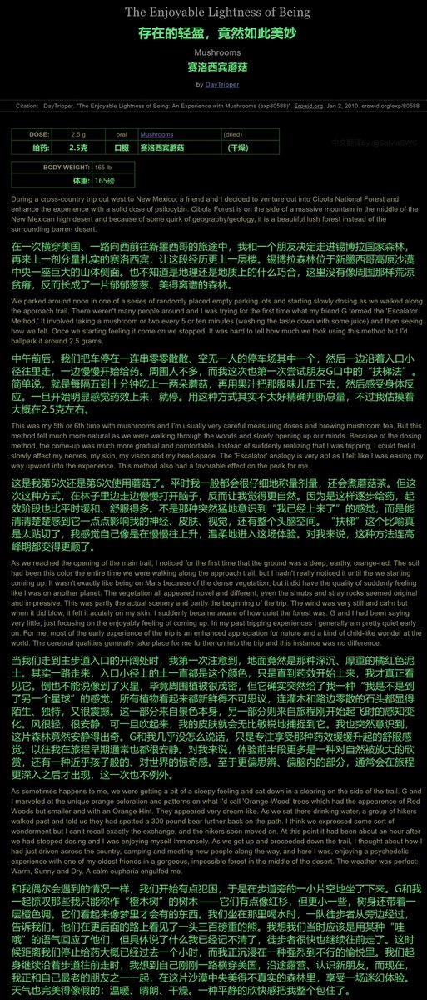
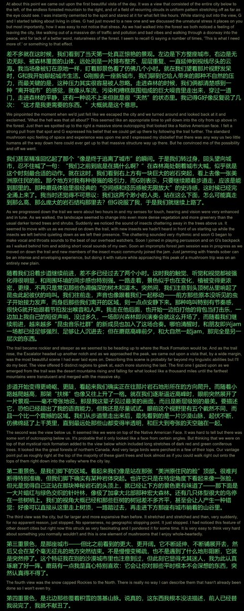
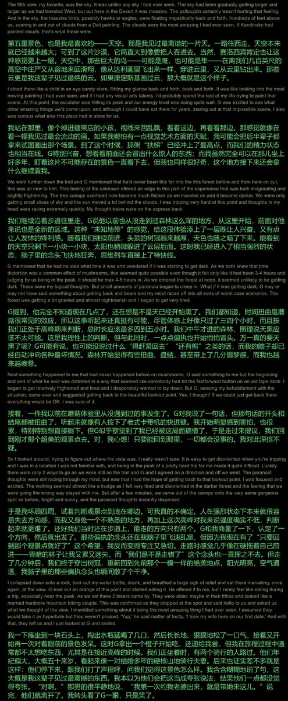
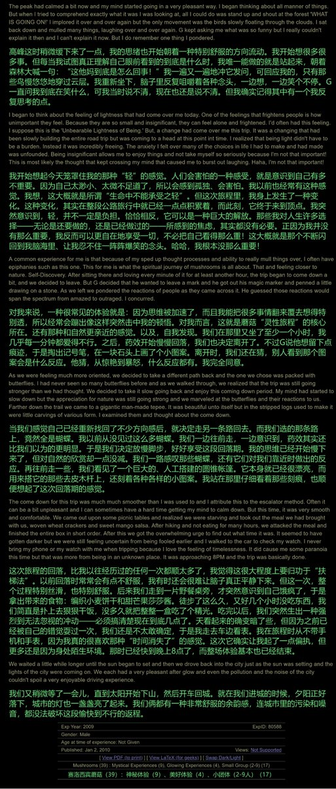
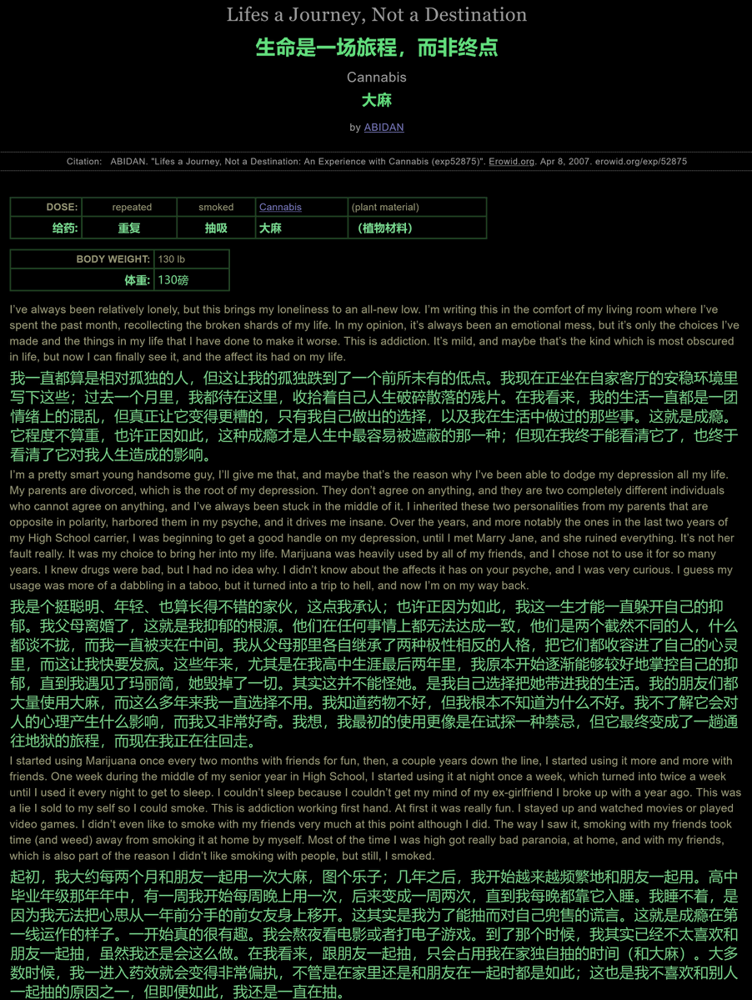
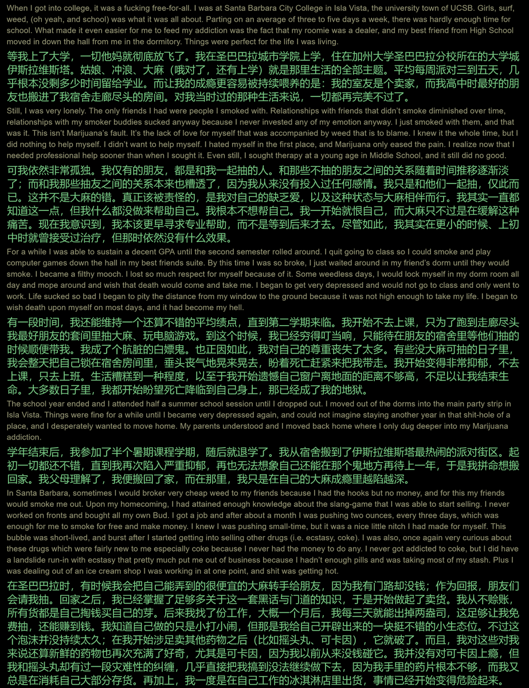
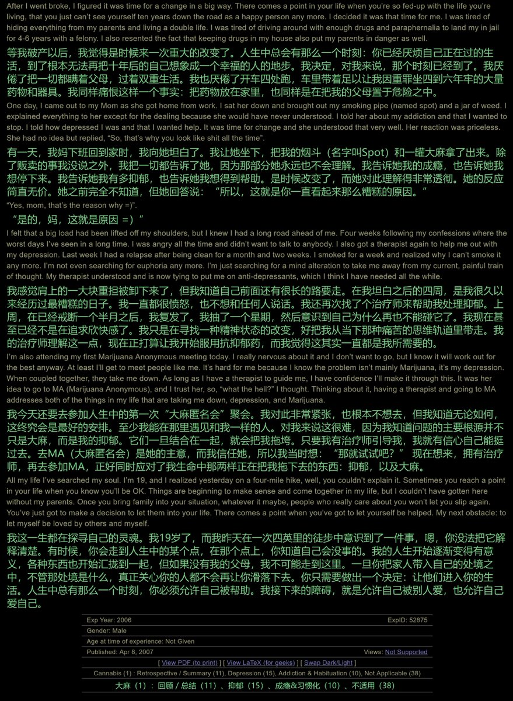

药物报告day5——蘑菇致幻状态下的森林游记🍄
“我”在游览国家森林时，顺路吃了一点致幻蘑菇。在致幻状态下，“我”的感官被放大、心灵被打开，完成了一次极其愉快、震撼、自由的森林幻旅
这就是致幻蘑菇的药效嘛🤓另外，推荐推u在服用致幻物质时出门走走，不同的地方会带来不同的体验(前提是确保安全🥺)

“我”在游览国家森林时，顺路吃了一点致幻蘑菇。在致幻状态下，“我”的感官被放大、心灵被打开，完成了一次极其愉快、震撼、自由的森林幻旅
这就是致幻蘑菇的药效嘛🤓另外，推荐推u在服用致幻物质时出门走走，不同的地方会带来不同的体验(前提是确保安全🥺)







药物报告day 4——大麻味的学生时代
作者高中时，因父母离婚、女友分手而陷入抑郁。他转向大麻和药物来逃避，并走向成瘾。他的大麻成瘾愈演愈烈，在大学时期达到高峰。最终，在他退了学、破了产之后，决定戒掉大麻，把生活的碎片拼好。
将药物作为逃避的手段，会导致悲剧...所以大家补药这么做，好嘛🥹 https://t.co/wayrEbyTvd https://t.co/BW8DP0ZdVn
作者高中时，因父母离婚、女友分手而陷入抑郁。他转向大麻和药物来逃避，并走向成瘾。他的大麻成瘾愈演愈烈，在大学时期达到高峰。最终，在他退了学、破了产之后，决定戒掉大麻，把生活的碎片拼好。
将药物作为逃避的手段，会导致悲剧...所以大家补药这么做，好嘛🥹 https://t.co/wayrEbyTvd https://t.co/BW8DP0ZdVn